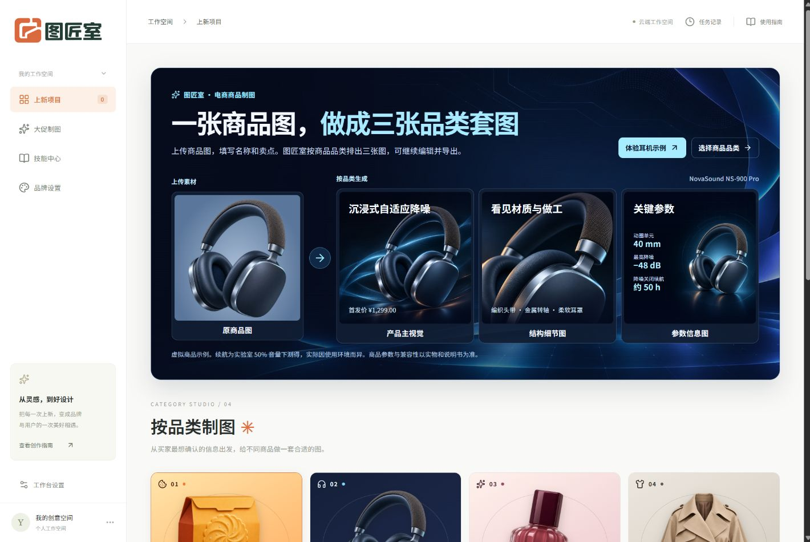
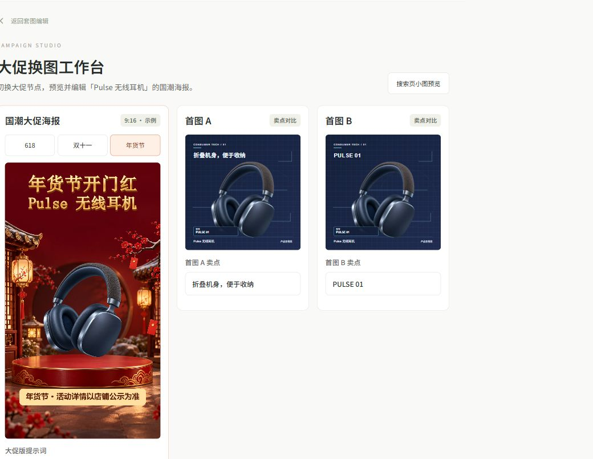
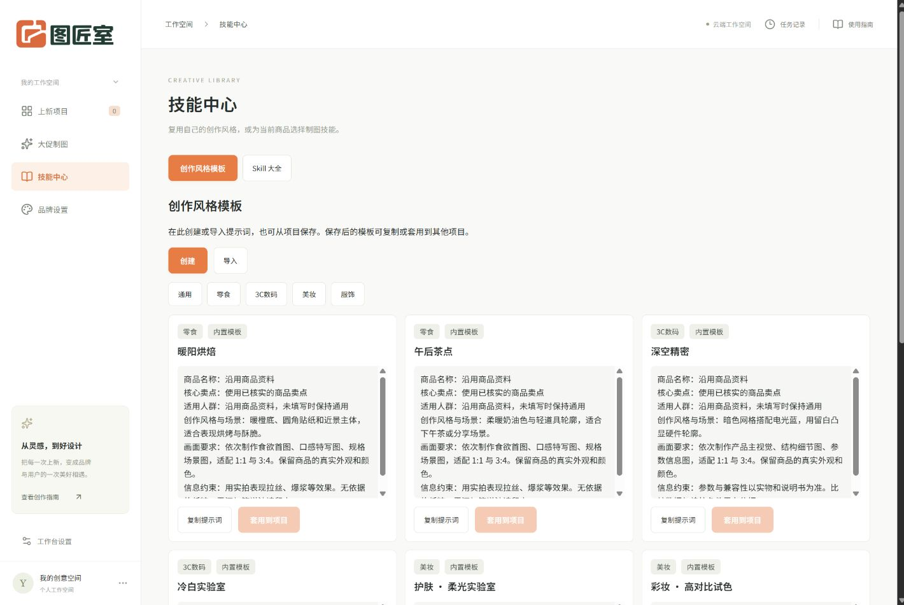

AI PRODUCT · E-COMMERCE
图匠室工作台
上传一张商品图，填写名称和卖点。图匠室根据品类生成三张各有用途的上新图，也支持用已有商品资料制作大促套图。
创新亮点
01 · 从买家要确认的信息决定套图
把制图的起点从挑通用模板改为选商品品类。工作台按品类给出素材要求、图型和排版。零食突出酥脆口感和份量，3C 数码展示结构与参数，美妆呈现质地和试色，服饰交代版型、面料和尺码。首页用一张耳机原图演示了三个输出：产品主视觉、结构细节图和参数信息图。

02 · 用已有套图快速换大促主题
旧商品的图片和卖点已经备齐，卖家从原项目进入「大促换图」，切换 618、双十一或年货节，即可预览对应风格。图中的耳机沿用同一张商品原图，活动文案和提示词可以调整，最终将首图 A/B 和 9:16 大促海报一起导出。

03 · 用技能中心复用提示词和制图方法
把写好的提示词保存为「创作风格模板」，也可以直接创建或从外部文件导入。模板按品类整理，做下一款商品时，可在「创作方向」预览并选用，再按商品特点调整。「Skill 大全」还支持从 GitHub 公开仓库导入开源 Skill 的说明，把其中的步骤和检查要点用作制图参考。
